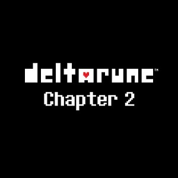

PERDU...

Sérieusement, cette musique venait de Deltarune, chapitre 2 !
Sorti le 17 septembre 2021, le chapitre 2 de Deltarune est 2 fois plus long.
Cette fois-ci, Kris et ses amis sont ammenés dans un monde cybernétique où d'autres aventure les attendent...